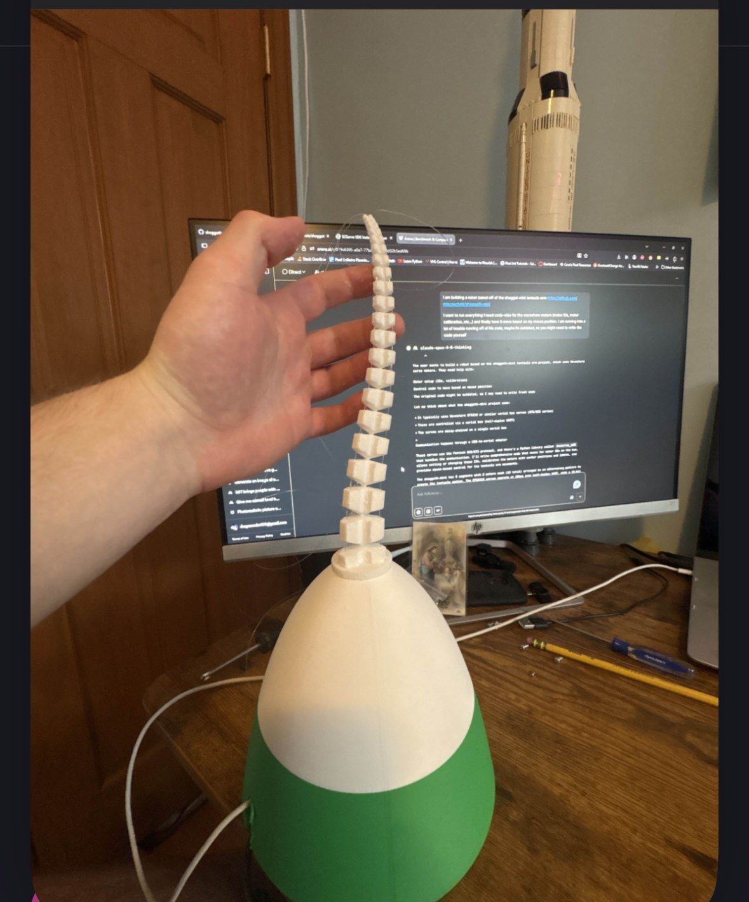

A 1.8 m blended-wing aircraft for conservation and agricultural surveys, designed around an ordinary Android phone and a free-software engineering toolchain.
CAD render · 3D-printed centre body and removable foam outer wings
A phone for perception. An independent autopilot for flight.
The Android companion handles RGB and thermal sensing and mission logic. ArduPilot handles flight control and failsafes independently, including loss of the phone link.
Engineering across the whole aircraft
FreeCAD design, SU2 aerodynamic analysis, CalculiX structural analysis, and stability checks with AeroSandbox and OpenVSP. CFD results informed wing sizing and the split-elevon airbrake design.
Landing sites planned before takeoff
A ground planner uses terrain, land-cover, and map data to select candidate emergency landing sites. Software-in-the-loop tests exercise the landing-site and phone-loss failsafes.
Designed and simulated; not yet built or flown. Prototype construction, bench validation, and supervised flight testing are the next milestones. Performance figures in the project documentation are predictions.
Samson: beneath the shellShell removed to show the structural frame, tilt linkages, electronics, and routed wiring. The orange marker indicates the calculated center of gravity.Open full-size view ↗
Kestrel: electronics and routingShell removed to expose the component layout, motor wiring, battery packaging, and control connections modeled inside the airframe.Open full-size view ↗
A notebook I built for working through mathematics: typeset equations and derivations, matrices, interactive graphs, multivariable calculus, and 2D/3D statics in one workspace.
Keep a reference document beside the working notebook, explore geometry and forces, and export assignments as PDFs. Notebooks stay on the computer.
macOS release preparation: code signing and notarization in progress.
Space truss · forces in three dimensionsAxiom’s method-of-joints view pairs the structure with joint coordinates, supports, member forces, and reaction components. Three force-balance equations per joint give 12 equations for this four-joint example.View full-size ↗
Planar truss · tension and compressionThe symmetric example shows 5 kN support reactions, a 5 kN member in tension, and two 7.07 kN members in compression. The diagram makes the force balance visible alongside the numerical solution.View full-size ↗
From an equation to a surfaceThe rotatable plot of z = sin(x) cos(y) makes a function of two variables tangible. It is a useful starting point for studying slopes, partial derivatives, and how a field changes across a surface.View full-size ↗
Working mathematics beside its referenceMy multivariable-calculus notebook keeps derivations, a surface plot, and a reference PDF in the same workspace. The examples connect calculus and mechanics to the mathematical foundations of my simulation and hardware work.View full-size ↗
1 / 4
Actual screenshots from Axiom. Trusses are demonstration problems; the notebook shows working study notes.
2026 · Rutgers Formula Racing · Chassis
Chassis optimizer with a Timoshenko beam solver
For my Rutgers Formula Racing chassis new-member project, I didn’t lay out the frame by hand. I wrote a tool that designs the tube frame around the fixed hoops and suspension points, checks it against the FSAE rules and driver templates, builds it in SolidWorks, and scores it with the team’s torsional-rigidity (TR) procedure.
Design 009c in SolidWorks116 tubes in team-stocked sizes, each coped in weld order. The red solids are the packaging keep-outs (battery, motor, cockpit, footwell) that no tube may enter. It scored 3,098 lb·ft/deg at 75.49 lb, 44% more TR per pound than the team’s best frame at slightly lower weight.Open full-size view ↗
The score: the team’s torsion testThe 8 rear pickups are fixed, 100 lbf pushes up on the 4 left front pickups and down on the 4 right ones, and the twist is read at two front bars. TR is the 545 lb·ft torque divided by that angle, and the score is TR per pound.Open full-size view ↗
Why the solver uses Timoshenko beamsA SolidWorks study takes minutes, so the optimizer uses its own beam model that runs in milliseconds. Every tube is a 3D Timoshenko beam with the same shear factor as SolidWorks (k = 0.5). Short tubes deflect in shear as well as bending, so an Euler–Bernoulli model would overrate them by 19% at 6 in and 44% at 4 in, and the optimizer would exploit that. The model matched SolidWorks within 1% on four frames.Open full-size view ↗
Why the frame is full of X-bracesTorsion is carried by closed boxes. On one test bay, triangulating the sides takes TR per pound from 17 to 204, and closing the top and bottom with 1.000 in X-braces takes it to 463. One diagonal per face is not enough.Open full-size view ↗
Every design the search triedTR per pound against weight for every rule-valid frame in the final search, with the SolidWorks results. At the team’s target weight the search finds about 40; heavier frames go higher.Open full-size view ↗
1 / 5
How it works. A ground structure of 630–810 candidate tubes and 270–350 X-braces is drawn between the fixed points. One adjoint solve ranks every candidate at once, and Sherman–Morrison–Woodbury updates score each add, remove or resize exactly in about a millisecond without re-solving the frame. A tabu search and a small integer program pick compatible tubes, random kicks escape local optima, and an outer pattern search moves 8 node positions within the rule windows.
What happened next. The tool exports a buildable SolidWorks weldment with a cut list, drawing and BOM. After I showed the method to the chassis leads, I joined the work on the 2028 frame in Ansys.
TR figures come from the team’s SolidWorks beam study, not a physical test. Open items: the real axle position and the battery removal path.
2023–2026 · Active aerodynamics testbed
RC Fan Car V2
The current design of my active-aero testbed: a 1/10 Tamiya TT-02 turned into a Brabham BT46B-style fan car. Two blowers pull a skirted plenum under the floor down to the ground, a DRS rear wing trims balance, and four servo rockers hold ride height so the skirt seal survives as the fan load comes and goes. Every number comes from one parameter file through scripted CAD, calculations, FEA, CFD and a controls simulation.
The finished carFreeCAD model generated by script, with a custom vacuum-formed body. 2.16 kg, $498 build cost against a $500 budget.Open full-size view ↗
Through the bodyThe blower stack, aero battery, sensors and servo rockers packaged under the shell. A clearance check found 0 part overlaps across 35 printed parts and 104 fasteners.Open full-size view ↗
Chassis and systemsTwo 97 mm centrifugal blowers in series on an isolated deck, an ESP32-S3 controller, an IMU, barometers on the plenum and ambient air, and ride-height sensors.Open full-size view ↗
Sealed plenumA 183 × 132 mm plenum sealed by 0.5 mm UHMW sliding skirts. Predicted fan downforce is 18.4 N, 0.87 of the car’s weight, at a 0.5 mm skirt gap, and it doesn’t depend on speed.Open full-size view ↗
DRS rear wingA NACA 6412 main plane and 4412 flap with a micro-servo DRS. The flap hinge torque is under 1% of the servo’s stall torque.Open full-size view ↗
CFD: leakage under the skirt2-D SU2 runs of the flow through the skirt gap give the discharge coefficient (about 0.63 at the design point). Leakage sets how much fan power holds the suction.Open full-size view ↗
CFD: DRS closed vs openSU2 RANS of the wing section with the flap closed and open. The closed main element separates at 30°, which the design accounts for.Open full-size view ↗
FEA of printed partsgmsh and CalculiX on six printed parts. All pass a safety factor of 2 at twice running load; the rocker shown is 8.6 MPa with a factor of 3.5.Open full-size view ↗
Controls, software in the loopThe controllers run against a vehicle model at 1 kHz. A fan step at standstill showed the first controller sagging the car, which led to three controller fixes.Open full-size view ↗
1 / 9
Analysed, not yet built in this configuration. “Pass” means the checks pass in analysis; physical testing follows the test plan in the 42-page design report.
A browser air-combat game I designed and shipped, built on Three.js. It has 100 aircraft across five eras, solo missions (close air support, frontline, dogfight, air escort), custom loadouts, research progression, and private multiplayer rooms for friends. It went into Basic Launch on CrazyGames on October 13, 2026, and had 636 players and 769 plays in its first two days.
FurballThe hardest parts were synchronizing combat in multiplayer and tuning the flight models and controls through repeated playtests.Open full-size view ↗
The hangarThe lobby shows the selected aircraft in 3D, with research, loadouts, mods, skins and mission selection around it. Variable-sweep aircraft can animate their wings.Open full-size view ↗
Close air supportA ground column pushes through defense lines toward a town. A JTAC calls targets with smoke, and the pilot works through artillery, a SAM site and a bridge.Open full-size view ↗
Introduced an evaluation framework measuring LLM recall from U.S. court opinion briefings.
Exposed limitations of standard long-context benchmarks such as Needle in a Haystack across three naturalistic legal recall tasks.
Physics-Informed Neural Network Research
Senior Year · 2025–2026
Achieved 117× faster inference than a finite-difference reference in project benchmarks, with 97% mass-conservation adherence.
Used the 1D Saint-Venant continuity equation as a training constraint to encourage physically consistent flood forecasts.
2nd Place, NJ State Science Fair — Computer Science Division.
Multi-Tiered Drone Swarm Research
Junior Year · 2024–2025
Developed reinforcement learning models for autonomous multi-agent wildfire detection, combining robotics, computer vision, and environmental modeling.
Inside the build
Soft robotics, from assembly to motion.
Prototype photos and bench experiments. All videos are silent.

Early prototypeThe first assembly and cable-driven arm.Cable-driven bendingDifferential cable tension bends the compliant arm.Material complianceA close look at the segmented arm and its flexibility.Trajectory experimentBench experiment alongside a trajectory visualization.Arm responseA short look at the prototype in motion.Pose-driven control experimentHand-pose input and the arm prototype during a control experiment.
Watch the project demonstrationProject demonstrationA longer look at the workbench demonstration.
About
A builder who tests ideas against reality.
I'm a Mechanical Engineering student in Rutgers University's Class of 2030 and a 2026
graduate of Edison Academy Magnet School. My work spans competitive physics, applied
machine learning, and hands-on robotics — I like problems that require both a
whiteboard and a soldering iron. Recently, I co-authored an accepted NLP workshop
paper, won a national NASA challenge for a 3D orbital-mechanics visualization built
in Unreal Engine, and placed 4th nationally leading a CubeSat wildfire-detection
project at MIT Beaver Works.
Physics
Top 400 nationally at USAPhO; 9th internationally at the Sir Isaac Newton Physics Exam.
AI & Robotics
On-device multi-agent research systems, physics-informed neural networks, and soft robotics.
Service
700+ confirmed hours digitizing history, running museum tech, and mentoring students.
Education & training
The foundation behind the work.
2026–2030 · Current
Rutgers University
Mechanical Engineering
New Brunswick, NJ
Class of 2026
Edison Academy Magnet School
Edison, NJ
Safety training
OSHA-10
Completed
Workplace safety training
Recognition
Recognition earned on the merit of the work.
NJ State Science Fair — CS Division
2026
2nd Place
Physics-Informed Neural Network Research.
MIT Beaver Works Summer Institute
2025
4th Place Nationally — 100 competing teams
Led a CubeSat design project for satellite-based wildfire detection, achieving a theoretical 90% fire detection accuracy.
NASA App Development Challenge
2025
National Winner — 200+ competing teams
Built a 3D visualization of the Artemis II lunar mission in Unreal Engine, requiring orbital mechanics modeling and advanced 3D graphics programming.
NJ State Science Fair
2025
Air Force Award
Drone Swarm Reinforcement Learning research.
Sir Isaac Newton Physics Exam
May 2025
9th Place Internationally — 3,800 global participants
USA Physics Olympiad (USAPhO)
April 2025
Distinction — Top 400 of 6,000 national participants
F=MA Examination
February 2025
USAPhO Qualifier
Volunteering & Leadership
700+ confirmed hours of service.
NJ Aviation Hall of Fame
2024–2026
Digitizing 150+ years of aviation history across 8,000+ pages of scrapbooks into a secure, private, high-resolution archive.
InfoAge Science & History Museums
2024–2026
Docent, repairs technician, and social media manager across the radio observatory, vintage computer collection, and makerspace.
Building a unified multi-museum artifact database spanning 500+ years of history across 20 buildings.